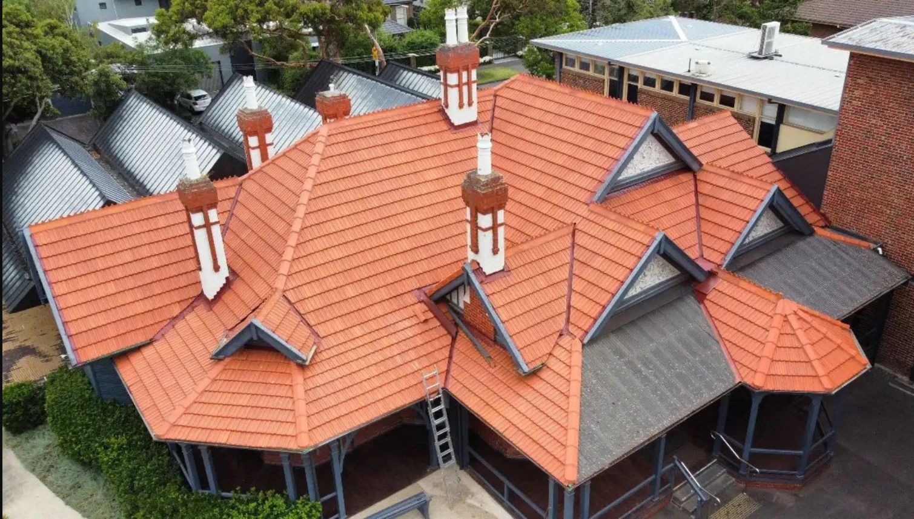

THE ROOF OF THE HOUSE ARE LIKE CROWN OR HELMET OF YOUR SWEET HOME!!
HENCE IT SHOULD BE MADE WITH ROYAL AND RESILIENT MATERIALS!!
you can use ARCHITECTURAL COPPER OR ZINC , and high-grade TERRACOTTA TILES
here is a picture to understand properly
